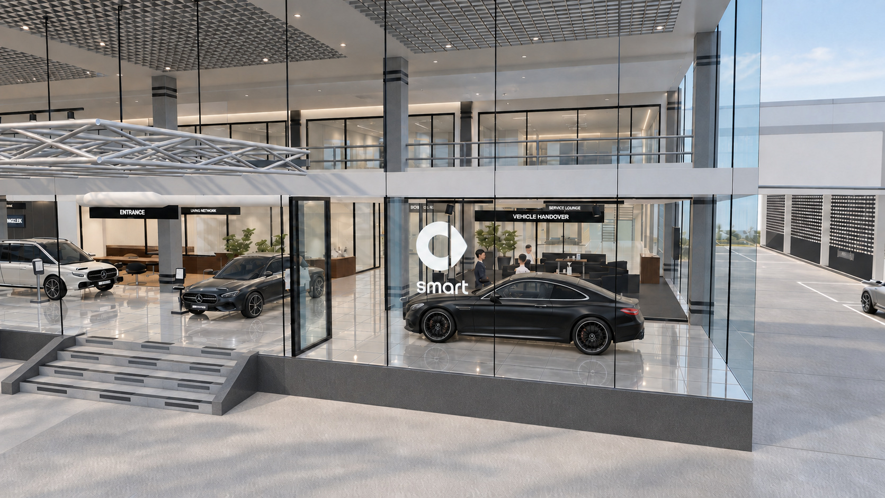
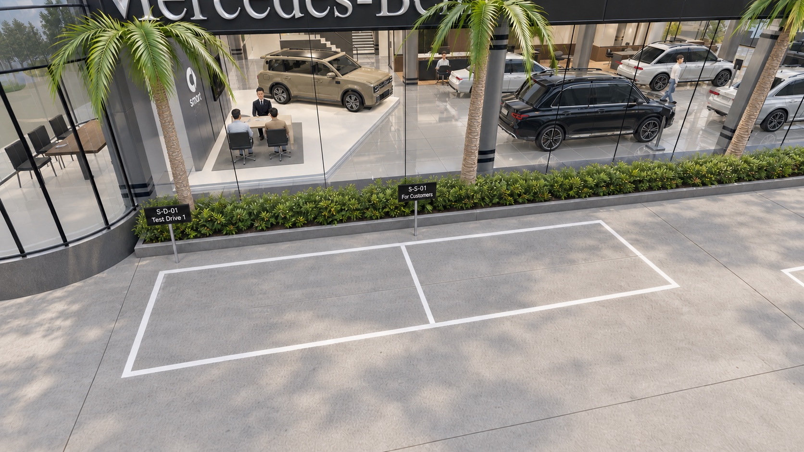
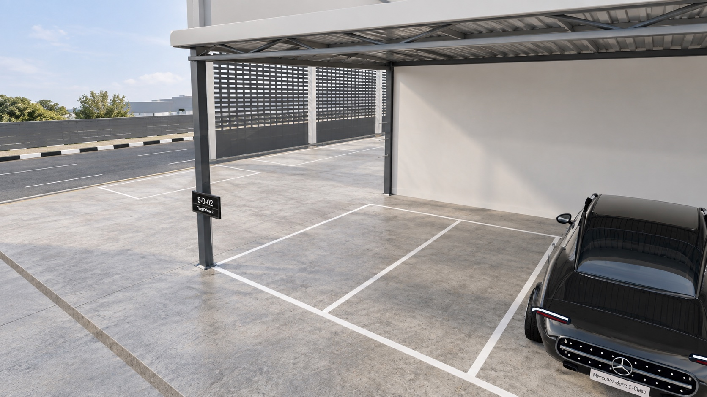
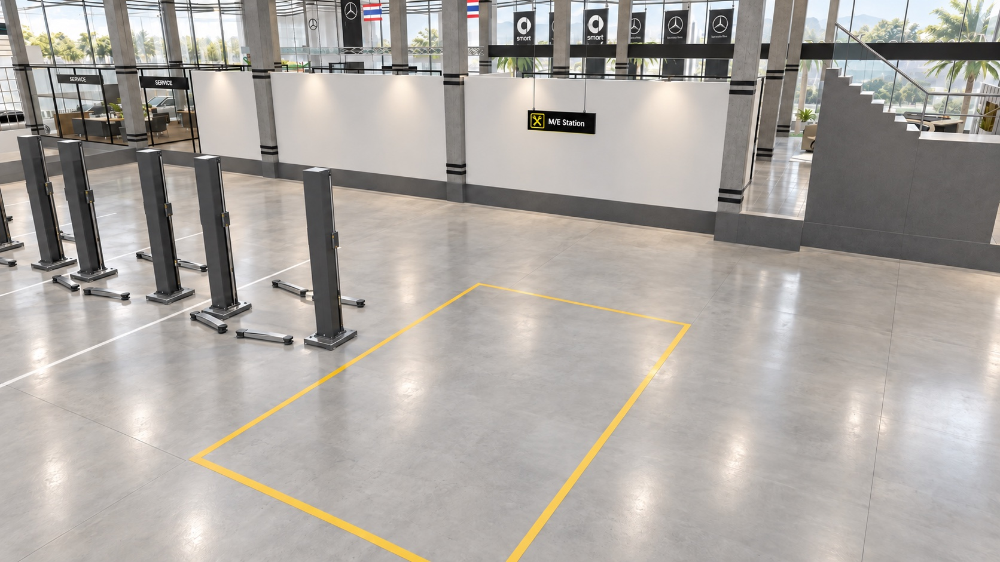
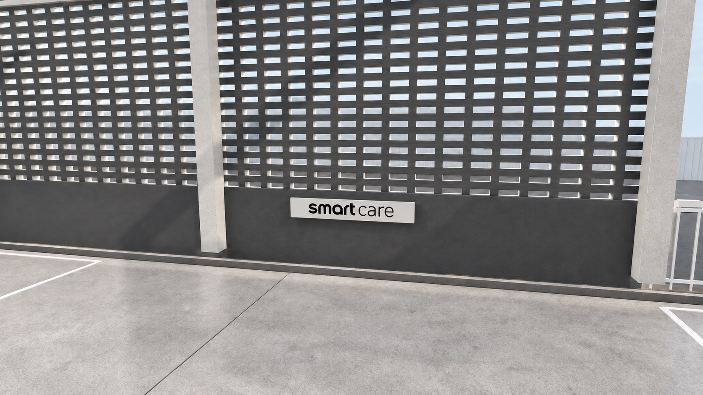

{kind=link}
{kind=link}
{kind=link}
{kind=link}
{kind=link}
{kind=link}
smart Module 3B
แสดง smart #5 หนึ่งคันบน Module 3B พร้อมขอบแท่นเรืองแสง ผนัง backdrop ทรงสี่เหลี่ยมคางหมูมุมโค้ง โลโก้ smart และจอ 75 นิ้ว
พื้นที่ปรึกษามีโต๊ะสีไม้หนึ่งตัว เก้าอี้ที่ปรึกษาหนึ่งตัว และเก้าอี้ลูกค้าสองตัวบนพรมสีเทา
Design review v15 · โมเดล r9 · ปรับตามความเห็นเจ้าของเพื่อพิจารณาร่วมกัน
สัมผัสแรกที่สงบและพรีเมียม เชื่อม Mercedes-Benz กับ smart ภายในพื้นที่เดิม
Artist impression · ภาพแนวคิดจากมุมโมเดล แสงและวัสดุเป็นการตีความด้วย AI ไม่ใช่ภาพหน้างานหรือแบบอนุมัติ
ภาพประกอบจากชุดนำเสนอ แยกให้เห็นการจัดพื้นที่ ป้าย และจุดบริการ เชื่อมกลับไปยังผังเดิมเพื่ออ่านตำแหน่งร่วมกัน

แสดงภาพตัวอย่างไม่ได้ กรุณาใช้ลิงก์เปิดภาพขยายหรือดาวน์โหลดด้านล่าง
มองจากภายนอกเห็นป้าย smart Type 4 Illuminated ด้านในกระจกห้องส่งมอบ หันออกถนนและเชื่อมกับพื้นที่ Mercedes-Benz เดิม
Artist impression · ติดตั้งด้านในกระจก หันหน้าป้ายสู่ภายนอก · Entrance แสดงเป็นขั้นบันไดตามสภาพใช้งานปกติ

แสดงภาพตัวอย่างไม่ได้ กรุณาใช้ลิงก์เปิดภาพขยายหรือดาวน์โหลดด้านล่าง
แยกช่อง S-D-01 สำหรับรถทดลองขับคันที่ 1 และ S-S-01 สำหรับลูกค้า ให้จดจำได้ตั้งแต่หน้าโชว์รูม
Artist impression · S-D-01 สำหรับทดลองขับ · S-S-01 สำหรับลูกค้า

แสดงภาพตัวอย่างไม่ได้ กรุณาใช้ลิงก์เปิดภาพขยายหรือดาวน์โหลดด้านล่าง
ช่อง S-D-02 รองรับรถทดลองขับคันที่ 2 ในแถวจอดด้านหลัง Workshop โดยใช้พื้นที่ใต้หลังคาเดิมร่วมกับรถ Mercedes-Benz
Artist impression · S-D-02 อยู่ปลายแนวจอดด้านหลัง Workshop

แสดงภาพตัวอย่างไม่ได้ กรุณาใช้ลิงก์เปิดภาพขยายหรือดาวน์โหลดด้านล่าง
กำหนดช่อง M/E Station ด้วยเส้นพื้นและป้าย เพื่อให้เห็นขอบเขตงาน smart ชัดเจน พื้นที่ช่องนี้คงว่างและไม่เพิ่มลิฟต์หรืออุปกรณ์
Artist impression · พื้นที่ว่างตีเส้น พร้อมป้ายแขวนเหนือช่องงาน

แสดงภาพตัวอย่างไม่ได้ กรุณาใช้ลิงก์เปิดภาพขยายหรือดาวน์โหลดด้านล่าง
คงป้าย smart care ที่รั้วริมถนนเดิม ระหว่าง MB-D02 กับ MB-D03 ติดบนผิวรั้วฝั่งที่หันเข้าหา Workshop ไม่ย้ายไปแนวผนังที่ถอยเข้าอาคาร · ตัวอักษรดำบนแผ่นพื้นสีอ่อน
Artist impression · คงตำแหน่งริมรั้วเดิม · ป้ายเดียวหันเข้าหา Workshop · ระหว่าง MB-D02 และ MB-D03
ข้อเสนอรอ smart / เจ้าของ / supplier ตรวจ · ภายในคงแบบเดิม
เส้นสีเมื่อเปิด “ป้าย / แนวควบคุม” เป็นแนวอ้างอิงโมเดล ไม่ใช่แนวเขตที่ดินหรือสีตีเส้นที่เสนอใหม่ · ปิดมวลอาคารชั้นบนเพื่อดูผัง
หมุนดูโมเดลที่สร้างเพื่อ test fit ตามมิติรถจริง — ไม่ใช่ CAD จาก smart · วัสดุและรายละเอียดเป็นภาพตีความ · ดูสรุปสิ่งที่แสดงในแบบ smart / Mercedes-Benz
ป้าย smart Type 4 Illuminated อยู่ด้านในกระจกหน้าห้องส่งมอบ หันออกถนน · หน้าห้องส่งมอบไม่มีต้นไม้ · ป้าย MB1–MB5 อยู่ข้างยางหน้าขวา หันตามหน้ารถ · ขนาดป้ายและการติดตั้งยังรอผู้ผลิตยืนยัน
เจ้าของระบุจุดชาร์จรวม 4 ตำแหน่ง รวมจุดในโชว์รูม โดยจุดหลัง Workshop ตรงกลางช่อง MB-C13 ชิดผนัง · รุ่น กำลังไฟ การติดตั้งและแนวสายยังรอตรวจ ไม่อ้างว่าสามารถลากสายชาร์จรถแสดงได้ และยังต้องให้ smart ยืนยันข้อกำหนดข้อ 10
สรุปพื้นที่ รถ ป้าย และอุปกรณ์ที่แสดงในภาพ ผัง และโมเดลของส่วนที่กำลังเปิดดู
แสดง smart #5 หนึ่งคันบน Module 3B พร้อมขอบแท่นเรืองแสง ผนัง backdrop ทรงสี่เหลี่ยมคางหมูมุมโค้ง โลโก้ smart และจอ 75 นิ้ว
พื้นที่ปรึกษามีโต๊ะสีไม้หนึ่งตัว เก้าอี้ที่ปรึกษาหนึ่งตัว และเก้าอี้ลูกค้าสองตัวบนพรมสีเทา
รถ smart มี E-price stand พร้อมแท็บเล็ต ส่วนรถแสดง Mercedes-Benz ทั้งห้าคันมีป้ายข้างยางหน้าขวาฝั่งคนขับ หันหน้าป้ายไปทางเดียวกับหน้ารถ
แสดง Sub Stage สองจอร่วมกับเคาน์เตอร์ต้อนรับและโต๊ะปรึกษา Mercedes-Benz เดิม แยกจากจอของ smart Module 3B
ห้องส่งมอบแสดงรถคูเป้ Mercedes-Benz สีดำ บันไดกลหน้า Entrance แสดงเป็นขั้น พร้อมแถบ anti-slip สามชิ้นต่อขั้น
ผังแสดงลำดับเคลื่อนรถ: ขยับ MB5 และป้าย → ปรับขั้นบันไดเป็น ramp → นำ MB6 ผ่านช่อง MB5 แล้วเลี้ยวซ้ายออก Entrance → คืนบันไดเป็นขั้น
แสดงพื้นที่นั่งรับรองพร้อมโต๊ะและชุดเครื่องดื่ม โมเดลพื้นที่ Flex เลือกดูได้สามรูปแบบ: Vehicle handover, Consulting area และ Customer waiting annex
แสดงจุดชาร์จ MB บริเวณข้างพื้นที่ส่งมอบ และสัญลักษณ์ตำแหน่งชาร์จในผัง
แนวหน้าอาคารแสดงธง smart สามต้นและธง Mercedes-Benz สามต้น ผืนธงมีขนาดเท่ากัน 1.20 × 4.50 ม.
ป้าย smart เรืองแสงติดด้านในกระจกหน้าห้อง Vehicle handover และหันหน้าป้ายออกสู่ถนน
แสดงเสาป้าย Mercedes-Benz เดิม และป้ายบอกทางเข้า ที่จอดรถ Sales, Service และ Spare Parts บริเวณหน้าอาคาร
ด้านหน้าแสดงช่อง smart S-D-01 และ S-S-01 ส่วน S-D-02 อยู่ปลายแถวจอดหลัง Workshop ร่วมกับช่อง Mercedes-Benz
แถวหลัง Workshop มีสิบช่อง ขนาดช่องละ 2.50 × 5.00 ม. เว้นจากผนัง 1.00 ม. หลังคาคลุมตลอดแนวอาคารและมีเสาทุกสามช่องจอด
High Voltage Station แสดงลิฟต์สองเสา ส่วน M/E Station เป็นพื้นว่างตีเส้น ไม่มีลิฟต์หรืออุปกรณ์ในช่อง ทั้งสองจุดมีป้ายภาษาอังกฤษเหนือช่องงาน
แสดงลิฟต์สองเสาแปดชุดและลิฟต์สี่เสาสองชุด โดย MB-4P-01 เป็นช่องตั้งศูนย์ล้อ และ MB-4P-02 เป็น Active Reception
แสดงตู้เครื่องมือทั่วไปใช้ร่วม ตู้เครื่องมือเฉพาะ smart และชั้นอะไหล่ smart แยกจากชั้นอะไหล่ Mercedes-Benz ในพื้นที่จัดเก็บร่วม
CS คือสำนักงาน Customer Service มีทางเดินและช่องจอด MB-S03 อยู่ข้างกัน แนวทางรถข้างอาคารเชื่อมผ่านใต้หลังคา Workshop โดยไม่มีประตูปิดกั้น
ป้ายอยู่ระหว่าง MB-D02 และ MB-D03 ที่รั้วริมถนน หันเข้าหา Workshop ผิวรั้วอิฐช่องลมฝั่ง Workshop ใต้หลังคาแสดงเป็นสีเทาเข้ม
ผังแสดงจุดชาร์จสี่ตำแหน่ง: ใน Showroom, ข้าง CS, ผนังท้าย Workshop และกลางช่อง MB-C13 ชิดผนังหลัง Workshop
เปลี่ยนจากบันไดตรงเป็น C-return สามช่วงพร้อมชานพัก ตามภาพ A01/A04; ขั้นเหนือ E เป็นทางเปลี่ยนระดับแยก. จำนวนขั้น ความสูง และ headroom เป็นสมมติฐานเพื่อแสดงภาพ รอรูปตัดและสำรวจ
Admin ประมาณ X8–16 / Y11.5–16 พร้อม core มุมใน; Living/Manager มีมุมโค้งถึง X28. ช่องเปิดต่างกันระหว่างแบบ จึงคงส่วนรอตรวจไว้ไม่ปิดทึบ
คง counter/เฟอร์นิเจอร์ Mercedes เดิม ปรับเฉพาะตำแหน่งตัวแทนที่ยังไม่ได้วัดเพื่อไม่ชนแนวห้องใหม่ ไม่ใช่คำสั่งย้ายของจริง. ขอบ Manager ทำให้พื้นที่กันไว้ทางไป service เหลือประมาณ 4.0 ม. ก่อนหักผิวเสา/ผนัง
ป้ายราคา MB อยู่ฝั่งพวงมาลัยขวา ถอยจากหน้ารถ 30 ซม. ในโมเดล ต้องขยับ MB5 และป้ายราคาก่อนนำ MB6 ผ่านช่องเดิม แล้วเลี้ยวซ้ายลง Ramp Entrance เดียวกัน ไม่เพิ่มประตูรถใหม่ · แนวทางรถภายนอก ปลาย ramp ทางเดินและวงเลี้ยวยัง HOLD รอตรวจหน้างาน ไม่ใช้เส้นแผนภาพเป็นระยะรับรอง
E–F 8.00 / F–G 5.50 / G–H 2.50 ม. ยืนยันโดยเจ้าของ; แกนหลัก X0–40 อ้างกริดเดิม 1/4/5/6/7/8 จากแบบประกอบ ไม่ใช่ระยะสำรวจหน้างานปัจจุบัน. +0.80 เป็นค่าระดับ ไม่ใช่ระยะในผัง
ฐานเต็ม 8.65 × 6.63 ม. / ผนัง 5.30 ม. ขอบมนสีเงิน แสงฝังพื้น พรมเทาบริเวณปรึกษา โต๊ะไม้สีอ่อน เก้าอี้เทา 1+2 จอ smart 75 นิ้ว E-price พร้อม tablet และข้อเสนอจุดชาร์จใช้ร่วมกับ Mercedes. จอ smart นี้แยกจาก MB Sub Stage 2 จอ; รอ supplier CAD / ตัวอย่างวัสดุ / ตรวจระบบไฟและความเข้ากันได้
#5 Premium ใช้มิติเผยแพร่โดย smart UK และ Premium specification: smart UK / ข้อมูลมิติ Premium. ผิวรถและภายในสร้างขึ้นเพื่อประกอบการออกแบบ ไม่ใช่ manufacturer mesh หรือสูตรสีโรงงาน
ใช้สี Saturn Beige Matte / Shadow Black และหลังคา Eclipse Black อ้างอิง UK RHD. ภาพทางการไม่ได้ถูกอัปโหลดสาธารณะระหว่างรอยืนยันสิทธิ; เปิดดูได้จาก smart configurator
แบบหลัก Handover มี MB6 หันไป smart. Consulting และ Waiting annex นำ MB6 ออกแล้วจัดเฟอร์นิเจอร์ใหม่. แอร์เปิดปิดแยกตามการใช้และเชื่อมห้องรับรองแอร์เดิมได้ โดยไม่ติดแอร์โถงหลัก
กระจก ฝ้าปิด แอร์/อากาศใหม่ การขนย้ายรถและที่เก็บเฟอร์นิเจอร์ต้องผ่านตรวจหน้างาน. คนเป็นตัวแทนสเกล ไม่ใช่การยืนยันจำนวนพนักงานจริง
คงรายการที่ปรับตามความเห็นในชีตแถว 40–41 แล้ว: ป้าย “High Voltage Station” ที่ผนัง และ “M/E Station” ตรงช่องพื้นว่าง ไม่เพิ่มลิฟต์หรืออุปกรณ์
ทางรถรอบอาคารเปิดผ่านใต้หลังคา Workshop ต่อเนื่องถึงด้านหลัง ไม่มีประตูหรือบานปิดกั้น หลังคาหลักยื่นถึงเสาริมรั้วอิฐช่องลม แนวเสาด้านในเปิดเชื่อมกัน เสนอทาเทาเข้มเฉพาะผิวอิฐด้าน Workshop และคง smart care ตำแหน่งเดิมริมรั้ว เฉดจริงและระบบสีรอ MB ยืนยัน
Entrance หน้า Showroom เป็นบันไดกลที่ปรับจากขั้นเป็น ramp เฉพาะตอนนำรถขึ้น–ลง แล้วคืนเป็นขั้น โมเดลและ Artist impression แสดงสภาพบันไดปกติ พร้อม anti-slip 3 ชิ้นต่อขั้น ไม่แสดง ramp ถาวรซ้อนบันได มิติขั้นและกลไกยังต้องตรวจหน้างาน
ถนนเสม็ด–อ่างศิลาแสดง 6 เลน ไป 3 กลับ 3 ตามเจ้าของยืนยัน ส่วนความกว้างเลน เกาะกลาง และมิติองค์ประกอบ Workshop ยังเป็นการเทียบภาพ ไม่ใช่ระยะสำรวจ
โมเดลอ้างอิงแสดงธง MB 3 ต้นที่ฝั่งหน้าซ้าย ธงชาติ 2 ต้น pylon และศาลเจ้าเดิมในมุมรั้วโค้ง ป้ายบอกทางข้างทางรถเข้าซ้าย รวมพื้นลาดยาง คันหินและร่องระบายน้ำตามภาพ ไม่ได้เสนอให้ย้ายของเดิมเหล่านี้
หน้า pylon MB อยู่ในระนาบอาคารด้านที่หันสู่ถนนเสม็ด–อ่างศิลา (X40) ไม่ใช่เพียงหมุนป้ายที่พิกัดเดิม คงป้ายบอกทางสองหน้า ห้องประชุมกระจกโค้งอยู่นอก Sales และอาคาร Workshop เชื่อมหลังโชว์รูมพร้อมกันสาดด้านข้าง
ป้าย Mercedes-Benz และ Chitchai Chonburi เป็นตัวอักษรยกเหนือคานคอนกรีตดำต่อเนื่องตามภาพกลางวันล่าสุด กระจกภายนอกไร้กรอบ แนวชั้นบนเป็นแถบหินโค้งสลับกระจกถอยร่น รายละเอียดป้ายและมิติอาคารยังต้องเทียบงานจริงก่อนผลิต
เจ้าของยืนยันระยะ 7.20 ม. จากขอบนอกกระบะต้นไม้เดิมหน้าอาคารถึงผิวด้านในรั้วหน้า ไม่ใช่จากผิวกระจก: ในโมเดล Y−1.12 ถึง Y−8.32. ด้านเสม็ด–อ่างศิลาให้ปลายกันสาด drop-off ชิดแนวด้านในรั้วที่ X49.2 โดยอ้างภาพ ไม่ใช่ระยะด้านข้างที่รังวัดแล้ว
หัวมุมรั้วใช้ R1.20 ม. เป็นค่าทดลองเทียบภาพ ไม่ใช่รัศมีรับรองของรั้วหรือคันหินถนน และไม่ใช่แนวเขตที่ดินตามกฎหมาย. ไม่เพิ่มต้นไม้หรือแถบปลูกชิดรั้วและทางเท้าทั้งสองด้าน คงเฉพาะกระบะต้นไม้เดิมหน้าโถงโชว์รูมหลัก ส่วนหน้ากระจกห้อง Vehicle Handover ไม่มีต้นไม้ตามเจ้าของยืนยัน
ช่องรั้วทางรถเข้าทดลอง X−6 ถึง 2.5 กว้าง 8.5 ม. ไม่ใช่ระยะลานกว้าง 18.5 ม. ที่เคยใช้ ด้านหลัง Workshop เป็นที่จอดเพิ่ม 10 ช่อง ช่องละ 2.5 × 5.0 ม. offset จากผนัง 1.0 ม. ตามเจ้าของ ต้องสำรวจพื้นที่และเส้นทางรถก่อนตีเส้นจริง
ตามคำสั่งเจ้าของล่าสุด ถอด smart pylon SP1 และธงเดี่ยวซ้าย SF1 ออกจากข้อเสนอ เหลือธง smart SF2–SF4 จำนวน3ต้น ผืนละ1.20×4.50ม. ใช้สัญลักษณ์และ wordmark จาก smart ทางการ; ขนาดผืนธง MB ทั้ง3ต้นปรับให้เท่ากัน คงความสูงและตำแหน่งเสาเดิม รายละเอียดผลิตและการรับแรงยังรอตรวจ
ป้ายบอกทาง smart: ไม่ใส่ / WAIVER PENDING — ใช้ป้าย MB ร่วมตามเจ้าของ ข้อกำหนดยังเปิดอยู่และยังไม่ได้รับอนุมัติยกเว้น. ย้ายป้าย smart care 04 / SC1 จากกันสาดมาติดด้านในรั้ว ระหว่าง MB-D02 กับ MB-D03 หันเข้าหา Workshop ตามเจ้าของ คง artwork และขนาด 2.07 × 0.30 ม. เดิม; การยึดรับแรงและการยอมรับตำแหน่งตามมาตรฐานยังรอตรวจ
ด้านเสม็ด–อ่างศิลาเป็นช่องขนานถนน หันหัว–ท้าย 4 ช่อง ขนาดในผัง 2.5 × 5.0 ม. จัดเป็น MB-C05 / C06 / C07 / D01 ตามผังเจ้าของ ไม่ใช่ข้อเสนอ smart ลูกค้า/ทดลองขับเดิม. ช่อง smart ที่ยืนยันคือ B1 = S-D-01 Demo, B2 = S-S-01 Sales และหลัง Workshop ช่อง 1 = S-D-02 Demo; ยังต้องตรวจข้อกำหนดโควตาและทางเลี้ยวกับแบรนด์
ช่องหลัง Workshop 1–10 เรียงขวาไปซ้าย: ช่อง 1 Smart Demo 02; ช่อง 2–10 = MB-C08 ถึง MB-C16. ปลายแถวตรงผนังข้าง Workshop X40 เว้นผนังหลัง 1.00 ม. หลังคาคลุมยาวตลอดแนว Workshop X2.02–40 รวม 37.98 ม. ในโมเดล ไม่จบแค่แถวจอด 10 ช่อง เสาทุก 3 ช่องจอดหรือ 7.50 ม. ตามเจ้าของ; ความสูง โครง เสาและระยะยื่นปลายยังต้องสำรวจและออกแบบโครงสร้าง
แนวเส้นจอดและสภาพลานใช้ภาพกลางคืนชุดล่าสุดจากเจ้าของ ป้ายอาคารเทียบ Street View มิ.ย. 2024; ภาพ ต.ค. 2023 และ ก.พ. 2019 ใช้ประกอบรูปทรงย้อนหลัง ไม่ถือว่าทุกรายละเอียดเป็นปัจจุบัน ระยะ ระดับ รัศมี แนวเขตและสาธารณูปโภคยังต้องสำรวจ ไม่ใช้ความสูงกล้อง Google Earth เป็นระดับพื้น
r3: แบบระบุ A–H รวม 42 ม. และ E–A 26 ม. จึงแก้ขอบกริดหลังเป็น Y42 พร้อมด้านซ้ายสอบเข้า; LX0–5 ตรงกริดเดิม 1/4/5/6/7/8 โดยไม่ย้ายผังโชว์รูม. มวล tower ใช้มุมร่วมกับห้องประชุมและกระจกหน้าถอยจากผิวบนทดลอง 1.90 ม. ระยะถอย รัศมีและความสูงยังเป็นการเทียบภาพ ไม่ใช่มิติสำรวจ
ธง smart คงไว้เฉพาะ SF2–SF4 รวม3ต้น ถอด SF1 เดี่ยวด้านซ้ายและ smart pylon SP1 ออกตามเจ้าของล่าสุด. ธง MB3ต้นใช้ผืน1.20×4.50ม. เท่ากับ smart; ระยะระหว่างกลุ่ม MB–smart และเสา smart เท่ากับ2.50ม. คงเสา MBสูง7ม. เสา smartสูง7.20ม. และธงชาติ2ต้นเดิม ฐาน การรับแรงและการยอมรับโดยแบรนด์ยังรอตรวจ. ป้ายบอกทางด้านหน้า Entrance ลูกศรซ้ายทุกบรรทัด ด้านหลัง Exit ซ้าย / รายการอื่นขวา. ทางรถรอบอาคารผ่านใต้หลังคา Workshop ต่อเนื่องถึงด้านหลัง ไม่มีประตูหรือบานปิดกั้น ไม่ใช่การเพิ่มช่องเปิดรั้วริมถนน
Workshop ตามเจ้าของ: ลิฟต์เดิมสองเสา 8 + สี่เสา 2 รวม 10 ชุด ไม่เพิ่มลิฟต์อีก. MB-4P-01 เป็นลิฟต์สี่เสาสูงสำหรับตั้งศูนย์ และ MB-4P-02 เป็น Active Reception; MB-2P-04 เป็น MB HV. smart HV ใช้ WS-R29 เดิม ส่วน smart service เป็นพื้นว่างตีเส้น ไม่มีลิฟต์ ตู้ หรืออุปกรณ์ในช่อง
มุมหลังขวาไม่มี M/E hoist; เป็นบันไดเหล็กเดิมขึ้นชั้นสอง กินพื้นที่ประมาณครึ่งช่องด้านหลัง. มิติขั้น บันได โครงและระดับเป็นตัวแทนรอตรวจ ไม่เพิ่มประตูหรือห้องชั้นสองที่ไม่มีหลักฐาน. เจ้าของระบุจุดชาร์จ 4 ตำแหน่งรวมโชว์รูม จุดหลัง Workshop ตรงกลางช่อง MB-C13 ชิดผนัง ไม่เพิ่ม wallbox ซ้ำในช่อง HV; รุ่น กำลังไฟ การยึด แนวสายและความปลอดภัยยังรอตรวจ
CS = Customer Service / สำนักงานบริการลูกค้า แยกพื้นที่สำนักงาน ทางเดิน และช่องจอดภายใน MB-S03 ข้างสำนักงาน ไม่ใช้คำว่า CS เป็นรหัสช่องรถ และไม่รวมช่องนี้ใน 26 ช่องภายนอก. ระดับพื้นและช่องเปิดต้องประสานหน้างาน จึงไม่สร้างผนังหรือประตูใหม่จากการคาดเดา นำตู้ diagnosis ที่อยู่ผิดตำแหน่งออก แต่หน้าที่ diagnosis ยังต้องมีและรอระบุตำแหน่ง
ระดับ Workshop ทดลอง −0.60 และ service −0.30 เทียบ showroom 0 ตามระดับแบบเก่า +0.90/+1.20/+1.50; ไม่ใช่ระดับถนนปัจจุบัน. รั้วริมถนนแยกส่วนซี่ขาวและส่วนอิฐช่องลมใต้หลังคา Workshop โดยทาเทาเข้มเฉพาะผิวอิฐด้านใน แนวเสาที่ถอยเข้า Workshop ส่วนใหญ่เปิดเชื่อมกัน ไม่เพิ่มผนังกั้นอีกแนว. ถนนเสม็ด–อ่างศิลาแสดงการขับชิดซ้าย 3 เลนต่อทิศทาง ส่วนพื้นที่หลังถึง Y50 เป็นขอบบริบทโมเดล ไม่ใช่แนวเขตที่ดิน
กริดแบบเก่าและสถานะมิติ · ผัง Workshop และประเด็นรอยืนยัน · ข้อมูล geometry สำหรับทีมออกแบบ
ทะเบียนภายนอกเดิม · ข้อเสนอและจุดรออนุมัติ · เปิด v08 เดิม · v07